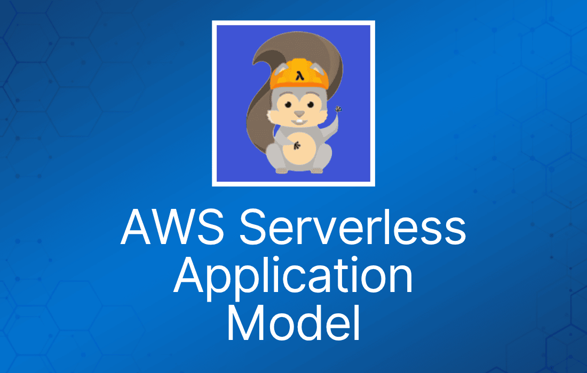
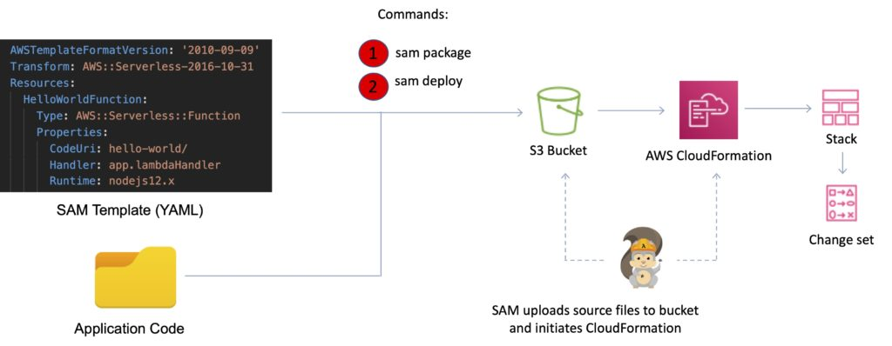
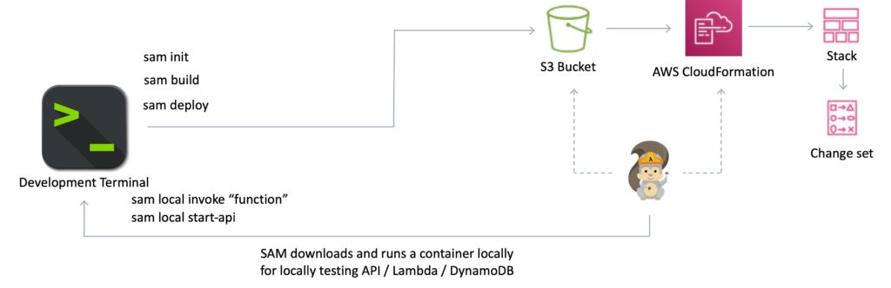
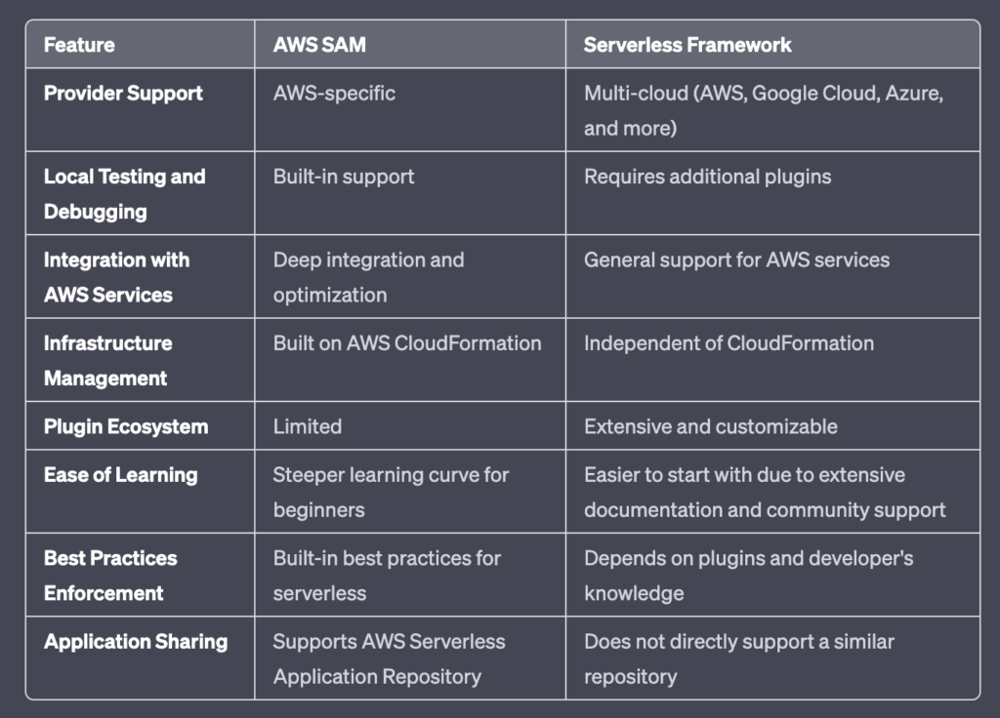

一、什么是 AWS SAM？
AWS Serverless Application Model (AWS SAM) 是一个开源框架，旨在简化在 AWS 上构建和部署 serverless 应用的过程。通过简化资源的创建
和管理，它显著降低了传统架构通常伴随的复杂性。

A. SAM 模板
SAM 模板是以 YAML 或 JSON 编写的配置文件，用于指定你的 AWS serverless 应用中使用的资源。它们是 AWS CloudFormation 模板的扩展，提供了简化的语法来定义 Lambda 函数、API Gateway API 和 DynamoDB 表等 serverless 资源。
B. SAM Command Line Interface (CLI)
SAM CLI 是本地开发和测试 serverless 应用的重要工具。它提供覆盖开发生命周期各阶段的命令，从本地调试应用到将代码部署到 AWS 云。
除了基本功能外，AWS SAM 还提供了简写语法来表达函数、API、数据库和事件源映射（event source mapping）。这一特性让开发者只需在 YAML 中为每个资源编写寥寥几行，即可定义和建模自己的应用。
部署时，SAM 会将这种语法无缝转换并展开为 AWS CloudFormation 语法，从而更快、更高效地构建 serverless 应用。此外，AWS SAM 支持所有 AWS CloudFormation 模板元素，如 Outputs、Mappings、Parameters，为开发者提供构建健壮、可扩展 serverless 应用所需的完整工具链。

二、AWS SAM 的核心优势
A. 与开发工具集成
AWS SAM 不仅能与 PyCharm、IntelliJ、VS Code 等主流集成开发环境（IDE）无缝协作、提升生产力并简化开发流程，还与一整套完整的 AWS serverless 工具集成。
这种集成让你可以在 AWS Serverless Application Repository 中发现新应用，并使用 AWS Cloud9 IDE 编写、测试和调试基于 SAM 的 serverless 应用。
此外，你还可以利用 AWS CodeBuild、AWS CodeDeploy 和 AWS CodePipeline 为你的 serverless 应用构建高效可靠的部署流水线。
B. 本地测试与调试
借助 SAM CLI，你可以在本地构建、测试和调试由 SAM 模板定义的应用。这通过即时反馈加速了开发周期。SAM CLI 提供了类似 Lambda 的执行环境，让开发者能够在本地构建、测试和调试由 SAM 模板定义的应用。

此外，SAM CLI 还可以将这些应用部署到 AWS，使其成为管理 serverless 应用生命周期的全能工具。
C. 构建在 AWS CloudFormation 之上
AWS SAM 是 AWS CloudFormation 的扩展，这意味着除了 serverless 特有的能力外，你还可以使用 CloudFormation 的所有强大而灵活的功能。
D. 内置最佳实践
AWS SAM 模板在设计上融入了最佳实践，内置了应用生命周期管理功能，例如安全部署和回滚能力。这种开箱即用的集成让开发者无需额外开销即可采用行业标准的方法论。
更进一步，AWS SAM 让你能够以配置的方式部署基础设施。这种做法便于落实代码评审等更多最佳实践，从而提高代码质量、减少部署问题。
此外，AWS SAM 的灵活性还体现在支持渐进式部署和追踪。只需几行 SAM 配置，你就可以通过 AWS CodeDeploy 启用渐进式部署，并使用 AWS X-Ray 引入追踪。
三、AWS SAM 的缺点
A. API Gateway 配置受限
AWS SAM 在 API Gateway 配置方面可能比较受限。虽然它简化了很多环节，但无法提供与手动配置或 Serverless Framework 相同程度的灵活性。
B. 插件创作者社区较弱
与 Serverless Framework 相比，AWS SAM 可用的插件较少。部分原因在于其关注点更窄，而且出现得相对较晚。
四、使用 AWS SAM 构建 Serverless 应用
A. 安装 SAM CLI
SAM CLI 可以通过各种包管理器轻松安装，例如 macOS 上的 Homebrew，或 Python 的 pip。
B. 下载示例 AWS SAM 应用
AWS 提供了大量示例 SAM 应用，可作为你的起点。你可以直接从 GitHub 下载这些示例。
C. 构建应用
创建好 SAM 模板并编写完代码后，使用 sam build 命令构建你的应用。
D. 部署细节
SAM 模板文件是一个 YAML 配置，代表 serverless 应用的架构。
你可以在一个模板中声明构成 serverless 应用的所有 AWS 资源。
AWS SAM 模板是 AWS CloudFormation 模板的扩展，因此任何可以在 AWS CloudFormation 模板中声明的资源，也可以在 AWS SAM 模板中声明。
所有配置代码均为 YAML。
"Transform" 头表明这是一个 SAM 模板： Transform: ‘AWS::Serverless-2016-10-31’
资源类型有多种：
- AWS::Serverless::Function (AWS Lambda)
- AWS::Serverless::Api (API Gateway)
- AWS::Serverless::SimpleTable (DynamoDB)
- AWS::Serverless::Application (AWS Serverless Application Repository)
- AWS::Serverless::HttpApi (API Gateway HTTP API)
- AWS::Serverless::LayerVersion (Lambda layer)
打包并部署到 AWS 只需要两个命令。
可以使用：
sam package sam deploy
或者使用：
aws cloudformation package aws cloudformation deploy
SAM Policy Template 是一组用于为 Lambda 函数应用权限的模板。
示例：
- S3ReadPolicy。
- SQSPollerPolicy。
- DynamoDBCrudPolicy。
E. 测试应用
使用 sam local 命令在本地测试应用。要在 AWS 环境中测试，可以手动调用 Lambda 函数，或在 Lambda 控制台中创建测试事件。
五、Serverless Application Repository
AWS Serverless Application Repository 充当 serverless 应用的集中枢纽，提供托管仓库，促进团队、组织和个人开发者之间的协作。该平台不仅允许用户存储和共享可复用的应用，还能让他们以创新且高效的方式组装和部署 serverless 架构。
利用 Serverless Application Repository 可以省去克隆、构建、打包或将源代码发布到 AWS 等传统部署步骤。用户可以直接将仓库中预构建的应用整合进自己的 serverless 架构。这种做法显著简化了开发流程，减少了重复劳动，促进了对组织最佳实践的遵循，并加快了上市速度。
为了进一步提升仓库的易用性和安全性，与 AWS Identity and Access Management (IAM) 的集成为每个应用提供了资源级的细粒度控制。这一特性提供了灵活的共享选项，允许用户将应用公开共享给更广泛的社区，或私下共享给特定的 AWS 账户。
通过点击这里探索 Serverless Application Repository 中丰富多样的应用。
六、AWS SAM 与 Serverless Framework 对比
AWS SAM 和 Serverless Framework 都提供了定义和部署 serverless 应用的简化方式，但各有优劣。Serverless Framework 是厂商中立的，意味着它可以与多个云提供商一起使用，而不仅限于 AWS。
另一方面，AWS SAM 是 AWS 专属的服务，与 AWS 服务有深度集成和支持。两者之间的选择通常取决于你项目的具体需求和场景。
